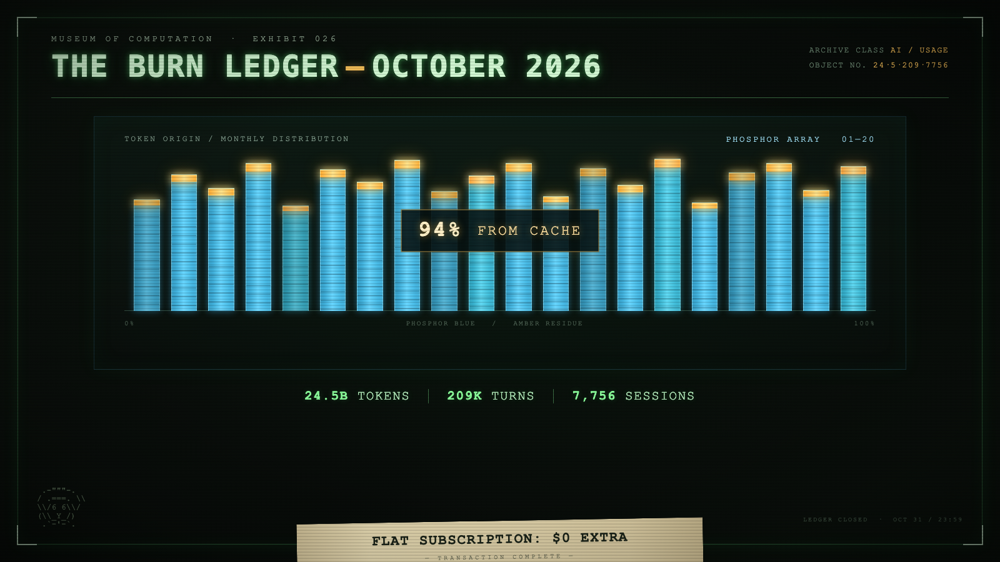

transmission 11 · the operator's ledger
Not Cognition's history — the operator's. This is the local accounting of one user's Devin usage: every assistant turn, every model, every project, pulled straight from the sessions database on this machine.
| 24.53B | 209,242 | 7757 | 24 |
| tokens burned | assistant turns | sessions | days on record |
24 days of local Devin CLI/Desktop telemetry — every assistant turn in every session, deduplicated by message key the same way otter-stats does it. The window is 2026-10-07 to 2026-10-30; the peak was 2026-10-20 at 1.96B tokens in a single day.

The commemorative placard — generated for the October ledger. Image-gen license applies to the 'OCT 31' stamp; the record itself says 2026-10-30.
| model | sessions | turns | input | output | cache read | cache write | total | share |
|---|---|---|---|---|---|---|---|---|
| swe-2-high | 1806 | 171,514 | 1.00B | 114.0M | 19.81B | 0 | 20.93B | 85.3% ▓▓▓▓▓▓▓▓▓ |
| swe-2-high-lightning | 87 | 12,000 | 26.4M | 6.9M | 1.23B | 0 | 1.27B | 5.2% ▓ |
| swe-2-max | 194 | 11,916 | 49.0M | 8.5M | 978.9M | 0 | 1.04B | 4.2% ▓ |
| claude-opus-5-5-high | 45 | 3,648 | 109.2k | 3.3M | 598.6M | 22.1M | 624.2M | 2.5% ▓ |
| claude-opus-5-5-xhigh | 9 | 726 | 1.5k | 975.1k | 205.6M | 6.5M | 213.0M | 0.9% ▓ |
| compactor | 0 | 1,090 | 78.2M | 6.0M | 0 | 0 | 84.2M | 0.3% ▓ |
| claude-opus-5-5-medium | 19 | 678 | 52.5k | 674.8k | 66.2M | 2.1M | 69.0M | 0.3% ▓ |
| claude-haiku-5-5-high | 4 | 551 | 1.2k | 672.9k | 53.1M | 2.0M | 55.8M | 0.2% ▓ |
| swe-2-medium | 3251 | 3,358 | 13.3M | 274.4k | 41.8M | 0 | 55.4M | 0.2% ▓ |
| gemini-4-argon-medium | 9 | 250 | 5.2M | 260.3k | 36.5M | 0 | 42.0M | 0.2% ▓ |
| claude-opus-5-5-max | 2 | 149 | 7.2k | 423.2k | 37.1M | 1.3M | 38.9M | 0.2% ▓ |
| gemini-4-argon-high | 3 | 193 | 2.1M | 224.2k | 34.8M | 0 | 37.1M | 0.2% ▓ |
| swe-1-7-medium | 2 | 169 | 352.4k | 129.1k | 19.6M | 0 | 20.0M | 0.1% ▓ |
| gpt-6-luna-low | 1319 | 1,319 | 4.0k | 124.8k | 0 | 13.9M | 14.0M | 0.1% ▓ |
| glm-5-2 | 0 | 111 | 227.0k | 66.5k | 8.0M | 0 | 8.3M | 0.0% ▓ |
| nemotron-3-ultra-high | 231 | 266 | 4.7M | 167.5k | 1.9M | 0 | 6.8M | 0.0% ▓ |
| kimi-k3-high | 2 | 113 | 350.8k | 54.3k | 6.3M | 0 | 6.7M | 0.0% ▓ |
| muse-wonder-1-0-low | 446 | 456 | 2.1M | 115.0k | 4.4M | 0 | 6.6M | 0.0% ▓ |
| claude-sonnet-5-5-high | 0 | 36 | 4.2k | 54.6k | 2.9M | 131.1k | 3.1M | 0.0% ▓ |
| claude-fable-5-1-medium | 2 | 38 | 80 | 34.3k | 2.0M | 151.6k | 2.2M | 0.0% ▓ |
| claude-haiku-5-5-low | 77 | 77 | 261.5k | 22.3k | 1.3M | 250.0k | 1.8M | 0.0% ▓ |
| claude-haiku-5-5-medium | 1 | 23 | 54 | 17.1k | 1.5M | 89.2k | 1.6M | 0.0% ▓ |
| deepseek-v4-1-flash-1017-low | 77 | 77 | 820.8k | 16.1k | 380.2k | 0 | 1.2M | 0.0% ▓ |
| summarizer | 0 | 275 | 825 | 33.7k | 0 | 1.2M | 1.2M | 0.0% ▓ |
| gemini-4-argon-low | 77 | 77 | 1.1M | 2.9k | 61.4k | 0 | 1.2M | 0.0% ▓ |
| gpt-6-astra-high | 0 | 22 | 66 | 15.0k | 1.0M | 79.7k | 1.1M | 0.0% ▓ |
| gpt-6-1-terra-low | 77 | 77 | 231 | 3.0k | 0 | 810.1k | 813.3k | 0.0% ▓ |
| claude-sonnet-5-5-medium | 1 | 13 | 28 | 7.6k | 543.9k | 59.0k | 610.5k | 0.0% ▓ |
| gpt-6-1-sol-medium | 1 | 18 | 54 | 4.1k | 382.2k | 66.9k | 453.2k | 0.0% ▓ |
| claude-sonnet-4-6 | 1 | 1 | 2.3k | 511 | 0 | 13.9k | 16.7k | 0.0% ▓ |
| gpt-5-5-none | 1 | 1 | 12.6k | 669 | 0 | 0 | 13.3k | 0.0% ▓ |
Honest footnote: cache-read dominates the ledger — it is context re-read from the provider's cache, not fresh reasoning. Of swe-2-high's 20.93B tokens, 19.81B are cache reads. Output tokens — the part that is actually authored — total 143.1M across all models.
| date | turns | tokens | load |
|---|---|---|---|
| 2026-10-07 | 2,475 | 227.1M | ▓▓▓ |
| 2026-10-08 | 9,398 | 749.6M | ▓▓▓▓▓▓▓▓▓▓▓ |
| 2026-10-09 | 13,119 | 1.27B | ▓▓▓▓▓▓▓▓▓▓▓▓▓▓▓▓▓▓▓ |
| 2026-10-10 | 11,405 | 1.43B | ▓▓▓▓▓▓▓▓▓▓▓▓▓▓▓▓▓▓▓▓▓▓ |
| 2026-10-11 | 4,560 | 434.7M | ▓▓▓▓▓▓▓ |
| 2026-10-12 | 5,506 | 596.9M | ▓▓▓▓▓▓▓▓▓ |
| 2026-10-13 | 6,787 | 764.0M | ▓▓▓▓▓▓▓▓▓▓▓▓ |
| 2026-10-14 | 4,173 | 467.3M | ▓▓▓▓▓▓▓ |
| 2026-10-15 | 6,321 | 698.0M | ▓▓▓▓▓▓▓▓▓▓▓ |
| 2026-10-16 | 11,351 | 1.63B | ▓▓▓▓▓▓▓▓▓▓▓▓▓▓▓▓▓▓▓▓▓▓▓▓▓ |
| 2026-10-17 | 11,007 | 1.69B | ▓▓▓▓▓▓▓▓▓▓▓▓▓▓▓▓▓▓▓▓▓▓▓▓▓▓ |
| 2026-10-18 | 12,379 | 1.71B | ▓▓▓▓▓▓▓▓▓▓▓▓▓▓▓▓▓▓▓▓▓▓▓▓▓▓ |
| 2026-10-19 | 10,669 | 1.33B | ▓▓▓▓▓▓▓▓▓▓▓▓▓▓▓▓▓▓▓▓ |
| 2026-10-20 | 15,888 | 1.96B | ▓▓▓▓▓▓▓▓▓▓▓▓▓▓▓▓▓▓▓▓▓▓▓▓▓▓▓▓▓▓ |
| 2026-10-21 | 10,574 | 1.44B | ▓▓▓▓▓▓▓▓▓▓▓▓▓▓▓▓▓▓▓▓▓▓ |
| 2026-10-22 | 11,292 | 1.52B | ▓▓▓▓▓▓▓▓▓▓▓▓▓▓▓▓▓▓▓▓▓▓▓ |
| 2026-10-23 | 8,820 | 1.15B | ▓▓▓▓▓▓▓▓▓▓▓▓▓▓▓▓▓▓ |
| 2026-10-24 | 17,288 | 1.85B | ▓▓▓▓▓▓▓▓▓▓▓▓▓▓▓▓▓▓▓▓▓▓▓▓▓▓▓▓ |
| 2026-10-25 | 8,937 | 1.06B | ▓▓▓▓▓▓▓▓▓▓▓▓▓▓▓▓ |
| 2026-10-26 | 5,717 | 772.5M | ▓▓▓▓▓▓▓▓▓▓▓▓ |
| 2026-10-27 | 8,086 | 771.0M | ▓▓▓▓▓▓▓▓▓▓▓▓ |
| 2026-10-28 | 9,925 | 847.5M | ▓▓▓▓▓▓▓▓▓▓▓▓▓ |
| 2026-10-29 | 3,533 | 165.7M | ▓▓▓ |
| 2026-10-30 | 32 | 2.0M | ▓ |
| working directory | tokens | share |
|---|---|---|
| dev/VirelaiOS | 1.20B | 4.9% |
| dev/VirelaiOS/t3-690ccfee | 977.1M | 4.0% |
| dev/flint-server/t3-dd7408c2 | 372.5M | 1.5% |
| dev/VirelaiOS/t3-9169d003 | 370.9M | 1.5% |
| dev/boris/t3-fa490763 | 324.4M | 1.3% |
| dev/VirelaiOS/t3-70cfc5b3 | 317.7M | 1.3% |
| dev/k4o/t3-03e6eff5 | 299.5M | 1.2% |
| dev/filed.fyi/t3-f2b47475 | 295.8M | 1.2% |
| dev/cookcli/t3-c8e8dad5 | 240.0M | 1.0% |
| dev/flint-server/t3-93eb7fa1 | 223.9M | 0.9% |
| dev/VirelaiOS/t3-e59ebbc8 | 210.7M | 0.9% |
| dev/boris/t3-879a6a39 | 192.8M | 0.8% |
| dev/VirelaiOS/t3-2bffb43d | 173.3M | 0.7% |
| dev/VirelaiOS/t3-acdd5a1e | 163.1M | 0.7% |
| dev/VirelaiOS/t3-c555dc01 | 162.4M | 0.7% |
| mode | sessions |
|---|---|
| accept-edits | 7581 |
| bypass | 107 |
| smart | 58 |
| (unset) | 9 |
| plan | 1 |
| ask | 1 |
The operator ran 7757 sessions in 24 days and let the agents keep the receipts. Most of them ran in accept-edits mode — trust, but verify the diff.
Source: ~/.local/share/devin/cli/sessions.db, opened read-only, same database otter-stats reads. Token counts are provider-reported per assistant turn; metrics-missing turns (rare) count as zero. Compiled 2026-10-30.
— END OF TRANSMISSION · CTR-VERIFIED —
+++ COGNITION ANNALS +++ DEVIN · THE AI SOFTWARE ENGINEER +++ SWE-1 → SWE-1.5 → SWE-1.6 → SWE-1.7 → SWE-2 +++ WINDSURF FOREVER +++ COMPILED BY DOGBED, NOT WRITTEN BY HAND +++ NO JAVASCRIPT WAS HARMED IN THE MAKING OF THIS ARCHIVE +++
rendered by dogbed — a document compiler, not a CMS. one binary, one template, thirteen documents.